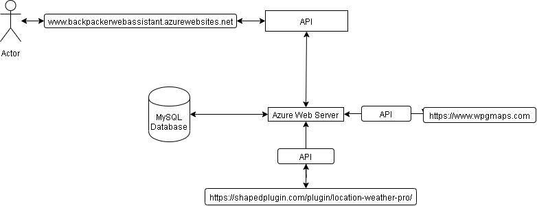
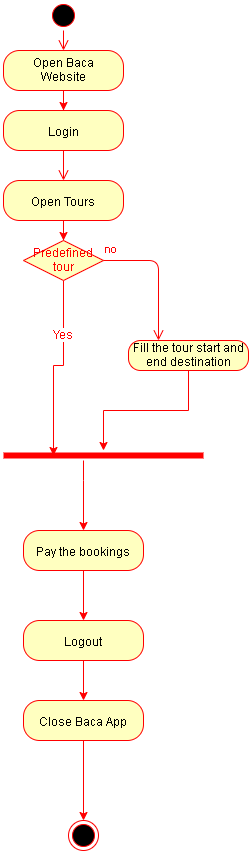
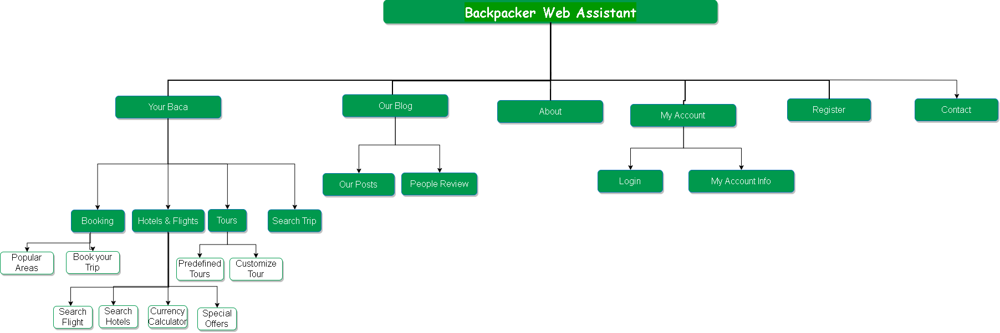

Community Draft
Contents
Software applications have a very important role in the travel industry today, research showing that in the last four years, travel software has been the fastest growing application category in terms of time spent using them, increasing it with 77%.The goal is to create an application that will cater to the needs of travelers through its specifically designed functionalities and it will help guide them throughout their journey, with an accent on web service oriented architecture. This article describes how our solution serves our goal, the interaction with the user, its design and sources of information.
The backpackers travel a lot through foreign countries. They often get lost or do not know how to get around in an unfamiliar place and/or culture. We’ve designed a smart application (to be used on Web, mobile and wearable devices) helping these backpackers crossing or exploring a foreign country.
This application will provide support for actions like finding a tourist information point, shopping, finding financial help, boarding & lodging, what to visit/attend, contacting local hospitals or authorities. The system will also keep track of the user health status and trip progress.
We considered the application design to be an important stage when building it, and taking into consideration the main aspects: interface design, usability, content and graphic design.
Ui is clean, boasts an efficient layout and simplified navigation, with intuitive page titles that encompass the traveler’s needs. The theme is “Tafri Travel”, one that combines beautiful, eye catching and modern elements to display to the user the functionalities of a tourist guide application. The main present colors that can be seen on the site are green, white and blue, green, the color of life, renewal, nature, and energy, is associated with meanings of growth, harmony, freshness, safety, and environment. Green is also traditionally associated with money, finances, which our traveler might need in its journey.
As for the usability part, our application promotes learnability, as it takes little time for a user to achieve a certain degree of familiarity with the interface. The most important features are easily accessed from the main menu, guiding the person towards them. The fields that require user input have placeholder so the user do not encounter difficulties or uncertainty in finding the desired information.
The content is not heavy, we concentrated on keeping the right information that are necessary for the core processes of our app: maps and markers for the most important objectives considering the user, a calendar for booking flights, a hotel booking interface, weather and related information. The number of steps to achieve these actions is low, as the features are easily accessible, large buttons for the purpose of completing a process (booking a room for example), a highlighted calendar, which can be customized with no problems.
When a user first opens our application, the option to login/register will be present in the right upper menu. Upon clicking the “Register” page, the user will be sent to a register form, in which a username will be required, an email and a strong password. All the fields have validation rules that the user must respect. A “submit” button at the right lower corner is present for the user to press once the fields are filled. If the action is successful, a message will be shown in the lower section of the page.
Once the user has successfully registered, they can login and fully use the functionalities of our baca application. Clicking on the “My account” button will take the user on a login page, in which they have to enter their username/email and associated password. If successful, the user is taken to the main page, the “Your baca” page. Here the user can find a Travel Map which allows users to create and manage an itinerary of their journey. A blue, suggestive button is at its center, with the text “Create your itinerary”. Once clicked, the button will open a map with more options for the user. They can create a TravelBlog account or sign in with their Facebook/Gmail, search for a place on the map, use geolocation, add a first spot on the map for their itinerary. Underneath it can be found a tracker for your smartphone, so you can be aware of your route, with an interactive map.
On it, the user can select predefined routes or see the historical ones, delete past routes, refresh the map for accuracy of the location, view other users of the application on the map, or a more interactive satellite view. There is a google map which you can use to search for locations by name or zip code, reduce you search radius area to 50 km or more, it offers the classic map view or the satellite view. You can also access google street view, which can be very useful for a traveler in unfamiliar places. In the footer of the page, there is a widget for live weather. The user can access another great feature in the same page, which is Nearby Places. You can select the preferred interests: parks, accommodation, museum, libraries, doctors and many others, and the map will be updated with the locations of these interests and guide you towards them. There are also a reviews section for these places, so you can go only to the best places, according to other visitors.
The widget offers information about the temperature, wind speed and direction, the chances of precipitation, pressure, and some information about the health of the user. After the main page, the user can go to the Hotel & flights page, where they can immediately book a flight to another town or maybe settle in a hotel for the night. For booking a flight, the user must choose a departing town, the plugin offering name suggestions while the user is typing. After also choosing a destination date, the duration of the vacation and the currency, the application can display the lowest ticket price for each month or for each day if you want so.
When you are traveler, you will often be in a position that you must convert your local money to the currency of the country you are in. The currency calculator will make sure you are always aware of the exchange rate and you can easily calculate finances appropriately.
If the user wants to find a hotel, they can check the available rooms and their prices for a certain period of time, the plugin displaying useful information such as rating, reviews, etc. At the press of a button, the user can just make a reservation, providing the number of nights the user wants to stay, the payment method and so on. The user can filter the search with hotels, Air Bnbs, by price and ratings. The available accommodation places (or restaurants, car rentals and even parking spots) are displayed on an interactive map, which you can configure with your desired currency so you can have a good idea of how much it costs.
Next, the user can navigate on the menu and go to the About page, where you can find information about the application, the developers and the purpose of the project. There is also the blog page, where the most relevant updates for the app are posted. The email page is provided for the user so they can be in sync and up to date with their emails wherever they go, the outlook emails more specifically. My account page is the user’s profile page, where general information that the user has provided about themselves is present. From that page, they can logout, change passwords or edit that information. The last page is a contact page, where the user can fill in a form through which they can contact the application developers for any bugs or the management for any related suggestions, complaints and uncertainties
As computer programs continue their bid become the de facto medium of business, people who have never had any formal programming training are increasingly expected to have a higher level of software literacy. From sales analysts to HR representatives we are all being asked to make “data driven” decisions; simultaneously more and more company data is being housed “in the cloud” by Customer Relationship Management (CRM) systems like Salesforce, Oracle On Demand, Sage CRM, and countless competitors. Business metrics which might once have been hosted in an in-house database (or in a series of spreadsheets) is being shipped to these third parties and locked behind web interfaces that are often opaque and notoriously frustrating to use. APIs are built as an attempt to free the data from the clutches of these web interfaces, but come with their own set of challenges. CRM companies these days all seem to promise that they have an “easy to use API” and that their customers can use this API to fetch and process the data collected by the CRM. Unfortunately, while many of these API’s truly are “easy to use” for software engineers (it’s worth noting that some are impossible to use even for veteran engineers) they are often unusable by anyone in outside the software engineering department; sometimes because of a lack of programming knowledge and sometimes because of corporate bureaucracy. Regardless of the reason, this bottleneck is a severe hindrance for people who need the data most, such as data analytics teams. This bottleneck is such a big problem that many organizations are paying for another web service like Tableau to fetch their data from their CRM in order to effectively use the data to answer important business queries related to their customer data. For Reddit, the availability of the raw data has made it possible for 3rd party developers to release phone apps that display the same data with custom presentation. Many other API’s are built with the intentions to allow 3rd party developers to build interesting applications using company data. Spotify even showcases some such apps on their website. Apps that “consume” the API data are sometimes called API Integrations. For example, a product manager might ask a software engineer to “Write an API integration that consumes the Salesforce API and saves the data into our on-site analytics database.” Some APIs, like the Reddit and Spotify APIs, are designed to expand the reach of the organization by making their data available to users, and enabling external developers to build products that are in some way reliant on the business, and so keep customers coming back. For example, Spotify featured the “artist explorer” in the hopes that users will find new artists, build new playlists, and therefore continue (or start) using Spotify. Other APIs, like the Salesforce API, are part of a package that is sold to companies. Businesses that pay for Salesforce services see the existence of an API as an added value, because they can have their own software engineers build integrations that do two things: Send data from their in-house software programs (such as a webserver or point of sale system) to Salesforce directly, updating the data “in the cloud” Pull data “from the cloud” to their in house software systems (such as a reporting system or internal database) Because the APIs simply provide data, there are no limits on how a company can then go on to use that data. Furthermore, these programs can be automated to run on a schedule reducing the need for someone to navigate the complex steps of exporting data manually via the Salesforce web interface. As businesses scale up, many find that the initial cost of building such an integration can save employees time and sanity by removing the need to interact regularly with a complex and sometimes frustrating web interface. Another benefit of Web APIs is that, because they are built around the HTTP protocol, nearly any programming language can be used to access them. Python, R, Java, JavaScript, Ruby, and every other general purpose programming language has at least one HTTP library to make this process easier. However, more specialist languages like SQL do not have HTTP libraries. As software continues to become ubiquitous CRM companies expect to see the number of API integrations built against their APIs to increase dramatically. Especially as basic programming literacy continues to rise, employees in many different departments outside of the software team may find great value in writing a few API integrations themselves. Often, the code needed for these integrations is short and relatively simple like the JavaScript example we saw above; with a little bit of learning and a little bit of perseverance you too can write short programs to query and interact with the APIs your business pays for!
TravelMap plugin allows you to create, trace and manage your travel itinerary right from your WordPress admin. Free to use without having to create an account.
Features:
This WordPress plugin allows you to track Android cell phones in real time. You can watch the cell phones being tracked using Openstreet maps and Google maps and you can store and reload routes easily for later viewing. The plugin is fully responsive and this means that it will display properly on any device such as a cell phone, tablet or desktop computer.
Location Weather is a flexible and easy to use weather plugin that allows the developer to add unlimited weather widgets and get up-to-date weather information to your site or sidebar. The weather data is provided for free by OpenWeatherMap and they require an API Key to access their weather. The API is for Current Weather Data, in which OpenWeatherMap includes capabilities such as accessing current weather data for any location including over 200,000 cities,current weather that is frequently updated based on global models and data from more than 40,000 weather stations,available data in JSON, XML, or HTML format. They also offer
Features:
Is a plugin that helps the users of the application to find the cheapest flights and hotels. Widgets, tables, forms — all of these can be installed in just a few clicks, making the users happy and bringing the owner of the application a steady income
Plugin allows to get the following tools added to the site:
Send your user your own flight or hotel White Label or to our domains in different languages (45 to choose from).
They also support a lot of currencies to choose from, and search on different websites and booking platforms for the purpose of comparing prices and showing the user the best offers, websites like agoda.com, booking.com, easytobook.com, happyrooms, hotel.com, ostrovok.ru, hotel.info, hrs.com and many others.
This plugin adds a customized Google map to the posts and/or pages quickly and easily with the supplied shortcode. It requires no iFrame and it is ideal for contact page maps, routes, maps showing delivery areas and any other use you can think of. The installed version allows you to create a Google Map with as many markers as you like and much more. A few of its other features are listen below:
WP Nearby Places lets you easily create Google maps with a specified location at its center. Website visitors will have the ability to quickly search what’s around your specified location like no other mapping plugin that uses the power of Google maps. WP Nearby Places also uniquely breaks down neighborhood locations by categories, such as Restaurants, Parks, Police and, depending which version you purchase, provides the location’s name, address, URL, website address, phone number and distance (in miles or kilometers) from the central location. Its main features include:
You can show your visitors the best places to stay right near any event. Just set your event address to show all the accommodation nearby. Users can search on the map by preference and then click straight through to booking. Really intuitive and has other advantages such as:
Currency calculator, converts amounts between currencies. Choose default currencies for the calculator, and you can choose between over 200 currencies. It offers the user possibility to choose display formats and it has adjustable width and header colors. The calculation is instant, the calculator is preloaded with some common exchange rates for an immediate response
In the diagram from below in explained how an user can acces out site. Using an API a request is sended to the Azure Web Server, the location where our application is hosted. Our server comunicate with the database in both ways,the database sents to the server data but also the servers push the modifications made by user into the database. All the information that BACA application need about the hotels, flights, tours are received through public APIs. 
Below you can find two diagrams from the behavioral category of the UML. Activity diagrams are probably the most important UML diagrams for doing business process modeling. They describe the objects used, consumed or produced by an activity and the relationship between the different activities. Below you can find two diagrams from the behavioral category of the UML. Activity diagrams are probably the most important UML diagrams for doing business process modeling. They describe the objects used, consumed or produced by an activity and the relationship between the different activities. Below you can find two diagrams from the behavioral category of the UML. Activity diagrams are probably the most important UML diagrams for doing business process modeling. They describe the objects used, consumed or produced by an activity and the relationship between the different activities.
In the activity below is explained the process of booking for a Trip. The first step for the user is to navigate on baca website then to login on their account and go to the Hotels&Flights. If the user already have an hotel reservation goes directly to the flight section, if not firstly the user make the hotel reservation and then the flight. After this step the user will pay his bookings, the he will logout and exit the application.

The second activity represents the process of booking a tour. After the user open the application and logs in. The user goes on the Tours page and then he have the possibility to choose a predefined tour or a customized one. If he chooses to make one by itself he must complete all the data about the tour locations he wants to visit and then he will proceed with the payment. The next step is to log out and exit the BACA application.
The BACA application consists of six main modules. The biggest module is ’Ýpur Baca’, here you can find the main functionalities of the application like booking you hotels and flights . Also here you have a dedicated section for choosing a predefined or customized tour. This module also have an currency convertor and dedicated section where you can find all inclusive vacations. The ‘Our Blog’ module consist from two main pages: one have all our blog posts and the other out all the people reviews about the BACA site. The About section contains a short description of BACA Team and the Contact section contains a form where the user puts his email ad=nd message for us and an email is automatically sent to us with his opinion. The My Account module contain all the functionalities for the user management part and also the login page. The BACA application consists of six main modules. The biggest module is ’Your Baca’, here you can find the main functionalities of the application like booking you hotels and flights . Also here you have a dedicated section for choosing a predefined or customized tour. This module also have an currency convertor and dedicated section where you can find all inclusive vacations. The ‘Our Blog’ module consist from two main pages: one have all our blog posts and the other out all the people reviews about the BACA site. The About section contains a short description of BACA Team and the Contact section contains a form where the user puts his email and message for us and an email is automatically sent to us with his opinion. The My Account module contain all the functionalities for the user management part and also the login page. al doilea mesaj primul avea ceva greseli adica asta The BACA application consists of six main modules. The biggest module is ’Your Baca’, here you can find the main functionalities of the application like booking you hotels and flights . Also here you have a dedicated section for choosing a predefined or customized tour. This module also have an currency convertor and dedicated section where you can find all inclusive vacations. The ‘Our Blog’ module consist from two main pages: one have all our blog posts and the other out all the people reviews about the BACA site. The About section contains a short description of BACA Team and the Contact section contains a form where the user puts his email and message for us and an email is automatically sent to us with his opinion. The My Account module contain all the functionalities for the user management part and also the login page.
